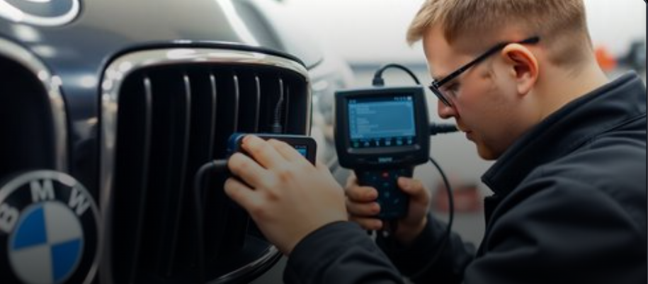
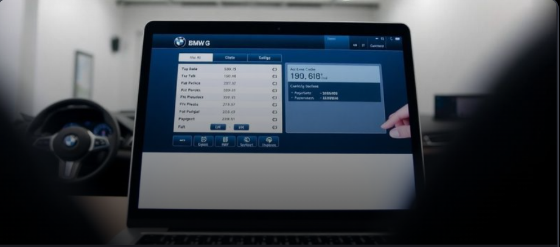
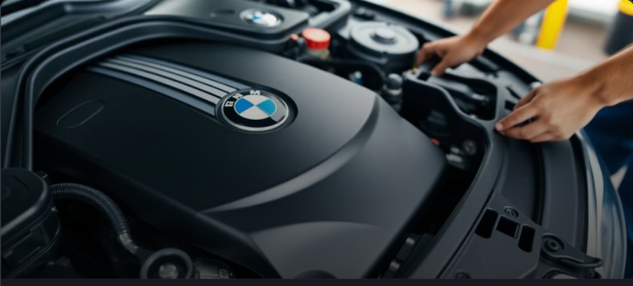

Frissítse BMW-je szoftverét és aktiváljon rejtett funkciókat professzionális kódolással.
A BMW kódolás egy speciális folyamat, amely során a jármű különböző elektronikus rendszereinek beállításait módosítjuk, hogy aktiváljunk rejtett funkciókat vagy testreszabjuk a meglévő funkciókat. A szoftverfrissítés során a legújabb gyári szoftververziókra frissítjük az autó különböző moduljait.
Szakértő csapatunk a legmodernebb BMW diagnosztikai eszközökkel és szoftverekkel dolgozik, hogy biztonságosan és megbízhatóan végezze el a kódolási és frissítési munkálatokat. Minden beavatkozás előtt alapos diagnosztikát végzünk, és biztosítjuk, hogy a módosítások kompatibilisek legyenek az adott járművel.






Vegye fel velünk a kapcsolatot, és kérjen személyre szabott ajánlatot BMW-je szoftverfrissítésére és kódolására.
Ajánlatkérés